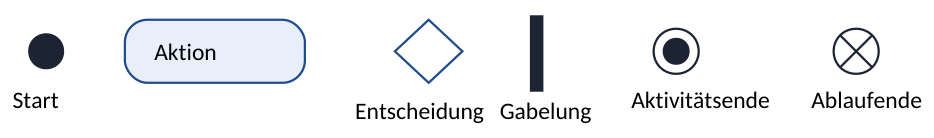
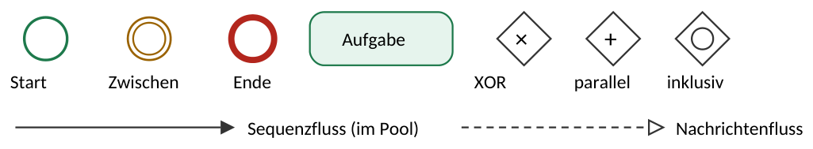

8UML, BPMN, Projektmanagement & Tests
- Statische Sicht (Struktur): Klassendiagramm. Dynamische Sicht (Verhalten): Aktivitäts-, Sequenz-, Anwendungsfalldiagramm.
- Aktivitätsdiagramm: Start ●, Aktion (abgerundetes Rechteck), Entscheidung ◇ mit [Bedingungen], Gabelung/Vereinigung (Balken), Ende ◉.
- Klassendiagramm: Aggregation = leere Raute (Teil existiert allein weiter). Komposition = gefüllte Raute (Teil stirbt mit dem Ganzen).
- BPMN: Ereignisse = Kreise, Aufgaben = abgerundete Rechtecke, Gateways = Rauten, Pools/Lanes = Verantwortliche.
- Black-Box-Test (ohne Code, nur Ein-/Ausgabe) vs. White-Box-Test (mit Kenntnis des Codes).
UML-Aktivitätsdiagramm

Bedingungen stehen in eckigen Klammern an den Pfeilen: [Ping erfolgreich] / [sonst]. Schwimmbahnen (Swimlanes) trennen Verantwortliche (z. B. Kunde | Service Desk | 2nd Level).
- Aktivitätsende (Kreis mit Punkt) beendet die gesamte Aktivität. Ablaufende (Kreis mit X) beendet nur einen Zweig.
- Gabelung (Fork) startet parallele Abläufe, Vereinigung (Join) wartet, bis alle fertig sind. Verzweigung (Raute) wählt genau einen Weg, Zusammenführung (Raute) führt Wege wieder zusammen.
- Jede Raute hat an allen ausgehenden Pfeilen eine Bedingung in [ ], und die Bedingungen schließen sich gegenseitig aus.
- Jeder Pfad endet in einem Endknoten, keine „losen“ Pfeile.
- Schleifen (z. B. „erneut versuchen“) laufen über eine Raute zurück.
UML-Klassendiagramm
┌────────────────────────┐ │ Server │ Sichtbarkeit: + public - private # protected ├────────────────────────┤ │ - hostname : String │ Attribute │ - ramGB : int │ ├────────────────────────┤ │ + starten() : void │ Methoden │ + getRamGB() : int │ └────────────────────────┘
| Beziehung | Symbol | Bedeutung / Beispiel |
|---|---|---|
| Assoziation | einfache Linie | Objekte kennen sich (Techniker – Ticket) |
| Aggregation | Linie mit leerer Raute am Ganzen | Teile existieren unabhängig weiter (Abteilung ◇— Mitarbeiter) |
| Komposition | Linie mit gefüllter Raute am Ganzen | Teile existenzabhängig (Gebäude ◆— Raum) |
| Vererbung (Generalisierung) | Pfeil mit leerem Dreieck zur Oberklasse | Datenbankserver ▷ Server |
Multiplizitäten stehen an den Linienenden: 1 , 0..1 , * bzw. 0..* , 1..* . Sie entsprechen den Kardinalitäten im ER-Modell.
Weitere UML-Diagramme und EPK
Selbst zeichnen können solltest du Aktivitäts- und Klassendiagramm (und das ER-Modell, Kap. 6). Anwendungsfall- und Sequenzdiagramm stehen ebenfalls im FISI-Katalog: lesen, ergänzen, Fehler finden. Das Zustandsdiagramm ist laut Katalog FIAE-Stoff.
Klassendiagramm – Details aus dem Katalog-Anhang
| Element | Darstellung |
|---|---|
| Sichtbarkeit | + public · - private · # protected · ~ package |
| Attribut / Methode | - hostname : String bzw. + starten(modus : int) : void |
| Abstrakte Klasse | Name kursiv oder mit {abstract}; man kann keine Objekte davon erzeugen |
| Schnittstelle | «interface» über dem Namen; legt nur Methoden fest, die andere Klassen umsetzen |
| Implementierung | gestrichelte Linie mit leerem Dreieck zur Schnittstelle |
| Gerichtete Assoziation | Linie mit offener Pfeilspitze: nur eine Seite kennt die andere |
Anwendungsfalldiagramm (Use Case)
Akteur (Strichmännchen, außerhalb des Systems) · Anwendungsfall (Ellipse) · Systemgrenze (Rechteck). «include» = wird immer mit ausgeführt (z. B. „Anmelden“) · «extend» = optionale Erweiterung unter einer Bedingung · Generalisierung (leeres Dreieck) zwischen Akteuren, z. B. Administrator erbt alles vom Benutzer.
Sequenzdiagramm
Beteiligte oben, darunter gestrichelte Lebenslinien; die Zeit läuft von oben nach unten. Synchrone Nachricht (gefüllte Pfeilspitze): Sender wartet auf das Ende bzw. die Rückgabe. Asynchrone Nachricht (offene Pfeilspitze): Sender wartet nicht. Rückgabe = gestrichelter Pfeil. Schmaler Balken auf der Lebenslinie = Objekt ist gerade aktiv. Rahmen: alt (Verzweigung mit [Bedingung]/[else]), opt (nur wenn Bedingung erfüllt), loop (Wiederholung). create erzeugt ein Objekt, ein X am Ende der Lebenslinie zerstört es. FISI-Beispiele: DHCP (DORA), TLS-Handshake (Kap. 14).
Ereignisgesteuerte Prozesskette (EPK)
| Symbol | Bedeutung |
|---|---|
| Sechseck | Ereignis: eingetretener Zustand, z. B. „Störung gemeldet“ |
| Abgerundetes Rechteck | Funktion: Tätigkeit, z. B. „Störung analysieren“ |
| Oval | Organisationseinheit: wer die Funktion ausführt (z. B. Service Desk), per Linie zugeordnet |
| Rechteck | Objekt: Informationsobjekt (z. B. Ticket), Material, Ressource oder Produkt |
| Kreis mit Zeichen | Konnektoren: UND (alle), XOR (genau einer), ODER (mindestens einer) |
| Pfeile und Linien | Kontrollfluss (Pfeil zwischen Ereignis, Funktion, Konnektor) · Informationsfluss (Objekt wird gelesen/geschrieben) · Material-/Ressourcenfluss (wird verbraucht) · Zuordnung (einfache Linie: Organisationseinheit oder Objekt zur Funktion) |
Regeln: Beginnt und endet mit einem Ereignis · Ereignis und Funktion wechseln sich ab · nach einem Ereignis darf kein XOR/ODER verzweigen (ein Ereignis kann nicht entscheiden, nur eine Funktion).
Ergänzungen aus dem Katalog-Anhang: Aktivitätsdiagramm – Katalogbegriffe: Teilung (Splitting) und Synchronisation (Und) für parallele Abläufe, Entscheidung und Zusammenführung (Oder); ein Konnektor (Kreis mit Buchstabe, z. B. A) verbindet Ablaufteile als Sprungmarke; Ablaufende (Kreis mit X) beendet nur den aktuellen Fluss. Use Case – «include»: gestrichelter Pfeil vom Basis- zum eingebundenen Anwendungsfall; «extend»: gestrichelter Pfeil vom erweiternden zum Basis-Anwendungsfall, Bedingung und Erweiterungspunkt (extension point) als Notiz; Generalisierung auch zwischen Anwendungsfällen. Sequenzdiagramm – Selbstaufruf = Pfeil zurück auf die eigene Lebenslinie; bei loop auch feste Anzahl, z. B. loop(10). Klassendiagramm – Eigenschaften in geschweiften Klammern, z. B. - anzahl : int {static}. BPMN – Start-, Zwischen- und Endereignis gibt es jeweils als Nachrichten-, Timer- oder Exception-Event; Datenobjekt = Blatt mit Eselsohr; Sequenzfluss = durchgezogener Pfeil im Pool, Nachrichtenfluss = gestrichelter Pfeil mit kleinem Kreis am Anfang zwischen Pools.
BPMN 2.0 – Geschäftsprozesse modellieren

- Ereignisse (Kreise): Start (dünn), Zwischenereignis (doppelt, z. B. Timer, Nachricht), Ende (dick).
- Aufgaben (abgerundete Rechtecke): Tätigkeiten.
- Gateways (Rauten): × exklusiv (genau ein Weg), + parallel (alle Wege), ○ inklusiv (einer oder mehrere).
- Pool = Organisation/Teilnehmer, Lane = Rolle/Abteilung darin. Zwischen Pools gibt es nur Nachrichtenflüsse (gestrichelt).
- Unterschied zu UML-Aktivitätsdiagramm: BPMN ist für Geschäftsprozesse gedacht und von Fachabteilungen lesbar; UML eher für Software- und Systemabläufe.
Anforderungen erfassen und Architektur wählen
Qualitätsmerkmale (ISO/IEC 25010, im Katalog genannt): Funktionalität (tut, was gefordert ist) · Zuverlässigkeit (stabil, fehlertolerant) · Benutzbarkeit (verständlich, ergonomisch, barrierefrei) · Effizienz (Antwortzeit, Ressourcenverbrauch) · Wartbarkeit/Anpassbarkeit (leicht änderbar) · Übertragbarkeit (auf andere Plattformen) · dazu Sicherheit und Kompatibilität. Anforderungen werden messbar formuliert („Antwortzeit unter 2 s bei 100 Nutzern“) und nach geltenden Normen umgesetzt. Kunde beschreibt im Lastenheft was, Auftragnehmer im Pflichtenheft wie.
Mock-up: Entwurf/Skizze einer Oberfläche, bevor programmiert wird. Kunden sehen früh, wie es aussehen soll; Missverständnisse werden billig korrigiert.
| Architektur | Aufbau | Bewertung |
|---|---|---|
| 2-Tier (Client-Server) | Client mit Oberfläche und Logik ↔ Datenbankserver | einfach; Clients müssen bei Änderungen aktualisiert werden, DB direkt aus dem Netz erreichbar |
| 3-Tier | Präsentation (Browser/Client) ↔ Anwendungs-/Logikserver ↔ Datenbankserver | Standard für Webanwendungen: Schichten getrennt skalierbar und absicherbar (Webserver in DMZ, DB intern) |
| Multi-Tier | weitere Schichten (Load Balancer, Cache, Microservices) | sehr skalierbar, aber komplex |
Projektmanagement und Netzplan
Projekt = einmalig, zeitlich begrenzt, klares Ziel, begrenzte Ressourcen. Ziele SMART formulieren (spezifisch, messbar, attraktiv, realistisch, terminiert). Magisches Dreieck: Leistung/Qualität, Zeit und Kosten beeinflussen sich gegenseitig. Vorgehen: klassisch (Wasserfall: Phasen nacheinander, gut bei klaren, stabilen Anforderungen) oder agil (Scrum: kurze Sprints von 1–4 Wochen mit Product Owner, Scrum Master und Developers; gut, wenn sich Anforderungen ändern).
Projektstrukturplan (PSP): zerlegt das Projekt hierarchisch bis zu Arbeitspaketen. Daraus entstehen Zeitplan (Gantt-Diagramm: Balken auf einer Zeitachse) und Netzplan.
Netzplan: Vorwärtsrechnung: FAZ = größtes FEZ aller Vorgänger, FEZ = FAZ + Dauer. Rückwärtsrechnung: SEZ = kleinstes SAZ aller Nachfolger, SAZ = SEZ − Dauer. Gesamtpuffer GP = SAZ − FAZ (Verzögerung ohne Auswirkung auf das Projektende). Freier Puffer FP = kleinstes FAZ der Nachfolger − FEZ (Verzögerung ohne Auswirkung auf den Nachfolger). Kritischer Pfad = alle Vorgänge mit GP = 0; jede Verzögerung dort verschiebt das Projektende. Knoten im IHK-Format (Katalog-Anhang): oben links FAZ, oben rechts FEZ · Mitte Vorgang und Beschreibung · darunter Dauer | GP | FP · unten links SAZ, unten rechts SEZ.
A Ist-Analyse 2 Tage · B Hardware bestellen 5 (nach A) · C Konzept 3 (nach A) · D Server einrichten 4 (nach B und C) · E Schulung vorbereiten 2 (nach C) · F Test und Abnahme 2 (nach D und E). Berechne Zeiten, Puffer und kritischen Pfad.
| Vorgang | Dauer | FAZ | FEZ | SAZ | SEZ | GP | FP |
|---|---|---|---|---|---|---|---|
| A | 2 | 0 | 2 | 0 | 2 | 0 | 0 |
| B | 5 | 2 | 7 | 2 | 7 | 0 | 0 |
| C | 3 | 2 | 5 | 4 | 7 | 2 | 0 |
| D | 4 | 7 | 11 | 7 | 11 | 0 | 0 |
| E | 2 | 5 | 7 | 9 | 11 | 4 | 4 |
| F | 2 | 11 | 13 | 11 | 13 | 0 | 0 |
Lösung: Projektdauer 13 Tage, kritischer Pfad A → B → D → F. D startet erst bei 7, weil B (FEZ 7) später fertig ist als C (FEZ 5). Verzögert sich C um 3 Tage, ist der Gesamtpuffer von 2 Tagen aufgebraucht und das Projekt endet 1 Tag später (Tag 14).
Wirtschaftlichkeit von IT-Investitionen: TCO (Total Cost of Ownership) = Anschaffung + alle laufenden Kosten über die Nutzungsdauer (Strom, Wartung, Lizenzen, Personal, Entsorgung). ROI (Return on Investment) = Gewinn bzw. Ersparnis ÷ Investition × 100 %. Amortisation und Nutzwertanalyse → Kapitel 23.
Softwarequalität und Tests
| Testart | Beschreibung |
|---|---|
| Black-Box-Test | ohne Kenntnis des Quellcodes; nur Eingaben und erwartete Ausgaben laut Anforderung (Grenzwerte, Äquivalenzklassen) |
| White-Box-Test | mit Kenntnis des Codes; alle Zweige und Pfade werden durchlaufen |
| Unit-/Komponententest | einzelne Funktion/Methode isoliert |
| Integrationstest | Zusammenspiel mehrerer Komponenten/Systeme |
| Systemtest | Gesamtsystem gegen die Anforderungen, in produktionsnaher Testumgebung |
| Abnahmetest | Kunde/Fachabteilung prüft und nimmt ab (Abnahmeprotokoll) |
| Regressionstest | nach Änderungen prüfen, ob Bestehendes noch funktioniert |
| Last-/Performancetest | Verhalten unter hoher Last |
Versionsverwaltung (z. B. Git): Jede Änderung an Code, Skripten oder Konfigurationen wird mit Autor und Zeitpunkt gespeichert. Ältere Stände sind wiederherstellbar, mehrere Personen arbeiten parallel (Branches).
Grenzwerttest (Beispiel): Eingabe erlaubt 1–100 → teste 0, 1, 100, 101 und einen typischen Wert (50).
Weitere Testbegriffe aus dem Katalog: statische Tests (Code wird nicht ausgeführt: Review, Code-Inspektion) vs. dynamische Tests (Programm läuft mit Testdaten) · Debugging: Breakpoint setzen, schrittweise ausführen, Variablen beobachten; print-Debugging = Zwischenwerte ausgeben · Extremwertetest = Grenzwerttest plus Sonderfälle (0, negative Werte, leere Eingabe, sehr große Werte) · TDD (Test Driven Development): erst den Test schreiben, dann den Code · E2E-Test: ganzer Ablauf aus Nutzersicht · Testdatengenerator: erzeugt große oder anonymisierte Testdaten · Testprotokoll: Testfall, erwartetes und tatsächliches Ergebnis, Abweichung, Datum, Prüfer.
Dokumentation: Benutzerdokumentation (Anleitung für Anwender), Administrator-/Betriebsdokumentation (Konfiguration, Netzwerkplan, Passwörter getrennt sicher), Projektunterlagen, Change-Log. Dokumentation muss aktuell gehalten werden.
Präsentieren und Bildschirmmasken
- Diagrammart wählen: Linie = Verlauf über die Zeit · Säule/Balken = Vergleich von Werten · Kreis = Anteile an einem Ganzen (100 %) · Streudiagramm = Zusammenhang zweier Größen · Gantt = Zeitplan.
- Präsentation: eine Kernaussage pro Folie, Stichpunkte statt Fließtext, gut lesbare Schrift, hoher Kontrast, Quellen angeben, Corporate Identity beachten (einheitliches Erscheinungsbild: Logo, Farben, Schriften, Sprache).
- Tabellenkalkulation: relativer Bezug
A1passt sich beim Kopieren an, absoluter Bezug$A$1bleibt fest · SUMME, MITTELWERT, MIN/MAX, ANZAHL ·WENN(Bedingung; Dann; Sonst)·SVERWEIS(Suchwert; Bereich;Spalte; FALSCH)sucht den Wert in der ersten Spalte des Bereichs und liefert den Wert aus der angegebenen Spalte ·ZÄHLENWENN(Bereich; Kriterium). - Bild und Video: Rastergrafik (Pixel; JPEG verlustbehaftet für Fotos, PNG verlustfrei für Screenshots) vs. Vektorgrafik (SVG, beliebig skalierbar für Logos und Pläne). Videogröße ≈ Bitrate × Dauer ÷ 8; ein Codec (z. B. H.264/H.265) komprimiert.
- Bildschirmmasken – Softwareergonomie (DIN EN ISO 9241-110): aufgabenangemessen, selbstbeschreibend, erwartungskonform, steuerbar, robust gegen Benutzungsfehler. Barrierefreiheit (BITV, WCAG): ausreichender Kontrast, skalierbare Schrift, Bedienung per Tastatur, Alternativtexte für Screenreader, Informationen nicht nur über Farbe.
Ü8.1 Aggregation oder Komposition? a) Rechnung – Rechnungsposition · b) Rack – Server · c) Bestellung – Kunde.
Ü8.2 Skizziere ein Aktivitätsdiagramm: Ein Monitoring-Skript pingt einen Server. Antwortet er, wird „OK“ protokolliert. Antwortet er nicht, wird nach 30 s erneut gepingt; nach 3 Fehlversuchen wird ein Ticket erstellt und parallel eine SMS verschickt.
Ü8.3 Eine Funktion akzeptiert Portnummern von 1 bis 65535. Welche Testwerte wählst du für einen Grenzwerttest?
Lösungen Kapitel 8
Ü8.1 a) Komposition (Position ohne Rechnung sinnlos) · b) Aggregation (Server existiert ohne Rack weiter) · c) Assoziation (Kunde ist kein Teil der Bestellung)
Ü8.2 Start → [Aktion] Zähler = 0 → [Aktion] Server pingen → ◇ [Antwort] → [Aktion] „OK“ protokollieren → Ende · [keine Antwort] → Zähler + 1 → ◇ [Zähler < 3] → [Aktion] 30 s warten → zurück zu „Server pingen“ · [Zähler = 3] → Gabelung (Balken) → Ticket erstellen ‖ SMS senden → Vereinigung (Balken) → Ende.
Ü8.3 0 (ungültig), 1 (gültig), 65535 (gültig), 65536 (ungültig), ein typischer Wert wie 443, dazu evtl. ungültige Typen (Text, negative Zahl).